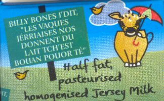

La Lait'tie d'Jèrri a annoncé à ches drein qu'nou s'en va chèrgi trente pénîns par jour pouor la d'livréthie d'lait. Lé Sieur Kevin Keen avait r'mèrtchi, s'lon les rapports ès médias, qu'ch'est un bardgîn et qu'chenna couôt'tait mains qué d'env'yer eune lettre.
Mais i' m'vînt à l'idée qué né v'là eune opporteunité pouor un mio d'chutte compétition si chiéthe ès tchoeurs dé tchiqu's'uns d'nos Sénateurs. Pouortchi pas aver d'la compétition entre la Poste dé Jèrri et la Lait'tie d'Jèrri à seule fîn d'vaie à combein bouôn marchi qu'i' pouôrraient d'livrer not' pînte journaliéthe?
Véthe-dgia, j'y vais d's opporteunités êconomiques, mé. Par exempl'ye, s'nou stique un tîmbre sus un carton d'lait, nou pouôrrait bein l'env'yer par la poste. Y'étha, tout coumme, un p'tit problième quand l'porteux d'lettres (et d'lait) arrive au pas d'l'us si la boête à lettres d'la maîson n'est pon grande assez pouor y poster les cartons tîmbrés. Mais j'y ai pensé étout. Chein qu'i' faut, bouonnes gens, ch'est l'înstâllâtion d'un entonneux et d'un tchuyau à la porte, et l'porteux pouôrrait bein aîsiement y vèrser vos deux'trais cartonnées. Assa, y'éthait d'la diffitchulté s'nou-s'avait c'mandé du lait et eune potée d'yaourt, car dans chu cas tout s'sait mêlé, mais l'idée est acouo, ous comprannez, en dêv'loppement.
Et pis y'a les pôssibilités d'markét'tie: quand nou-s'a à litchi un tîmbre, pouortchi pas aver l'goût d'produits laiteurs ajouôté à la cliute? Et d'même pouor l's env'loppes, valet! Nou hale sa langue pouor mucri la cliute et né v'là l'èrtunfîn d'yaourt ès frâses, ou d'gliaiche au nièr beurre, et v'là tchi vos mett' d'un co l'ieau à la bouoche en pensant ès pliaîsièrs crémeurs.
Et pis acouo, s'i' y'étha d'la compétition entre la lait'tie et la poste, les cheins d'La Crouaix d'Bouais pouôrraient bein d'livrer des lettres en m'ttant des bîssas sus un troupé d'vaques à seule fîn d'les m'ner par les c'mîns en distribuant la poste et en offrant à touos l's acateurs eune cannée d'lait d'même la vaque.
Et si la Compangnie dg'Ieau voulait faithe d'la compétition étout auve lus tchuyaux, v'là tchi modèrnis'sait tout à fait not' système dé d'livréthie. Mais, à toutes ches compangnies j'dis qu'i' n'faut pon landrinner dé peux qué m'n idée sait copyrightée!
Viyiz étout: